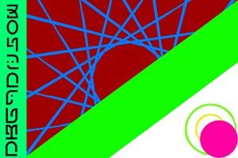

- ラジオ形式の動画
- ミュージックビデオ制作
- INEログマネージャー
- Webサイト運営
もつ楽ラジオ放送局 Made by まほまる
STUDIO MARX Made by パヤ爺
LINEログマネージャー Made by パヤ爺
(下にスクロールしてください)
フルサイズで使う場合はこちら※LINEブラウザではダウンロード不可

もつ楽ラジオ放送局 Made by まほまる
STUDIO MARX Made by パヤ爺
LINEログマネージャー Made by パヤ爺
(下にスクロールしてください)
フルサイズで使う場合はこちら※LINEブラウザではダウンロード不可